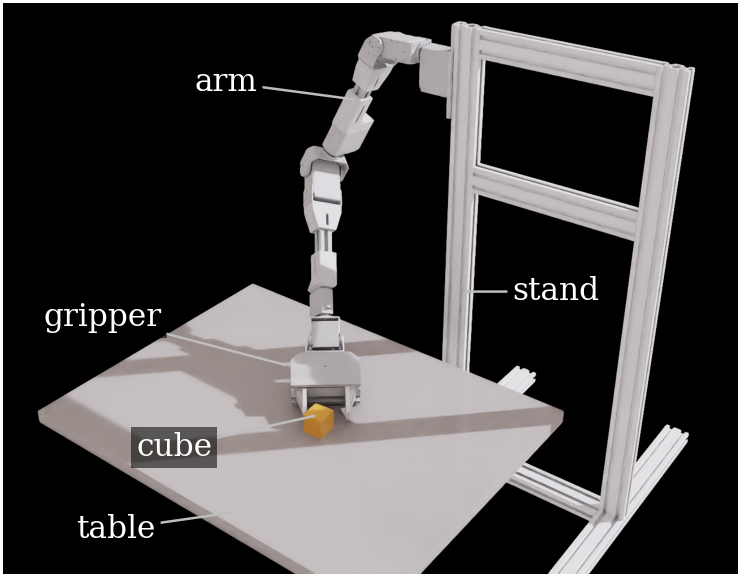
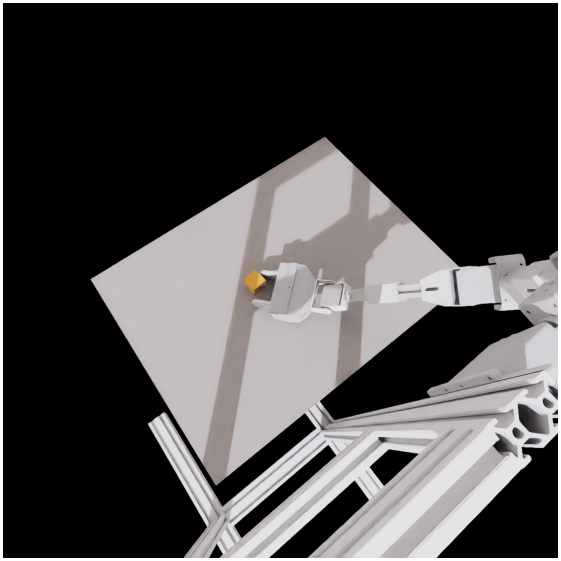
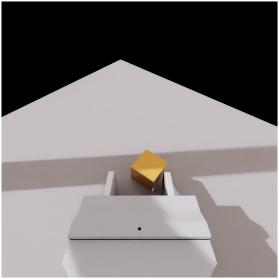
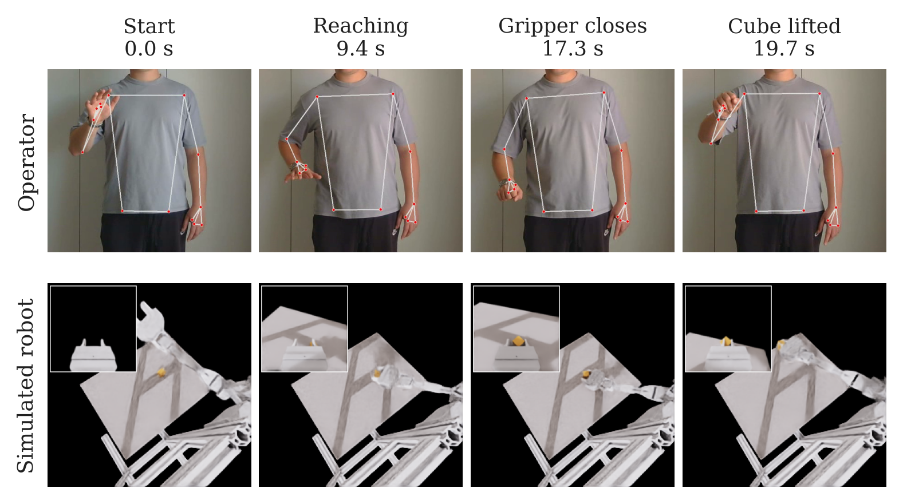
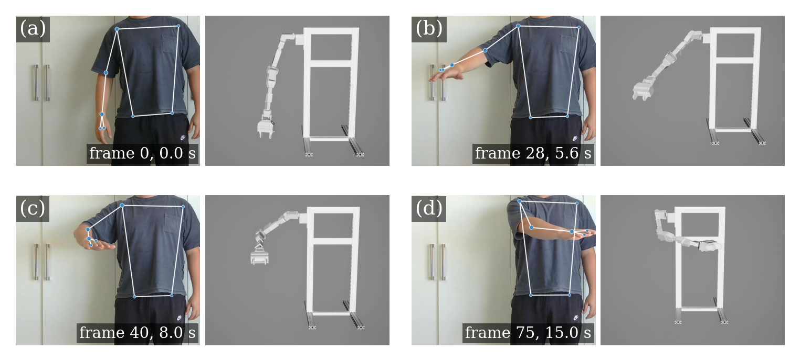
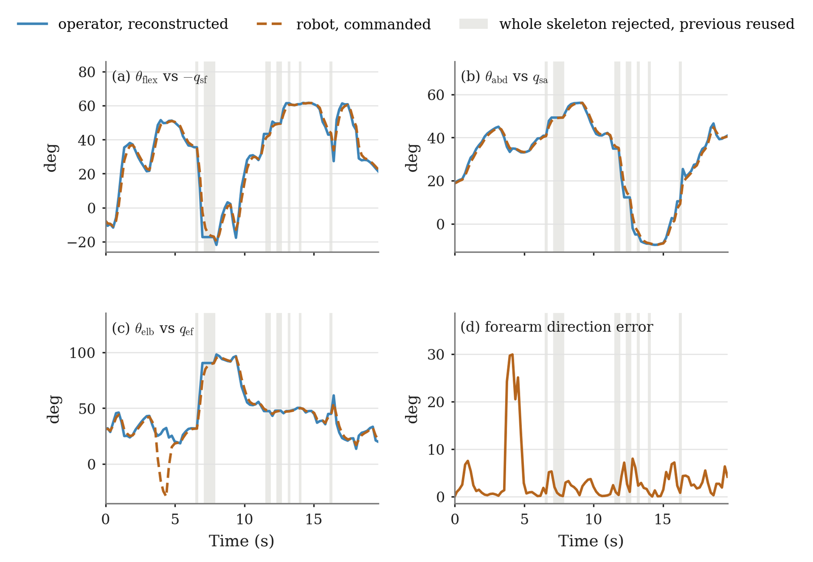
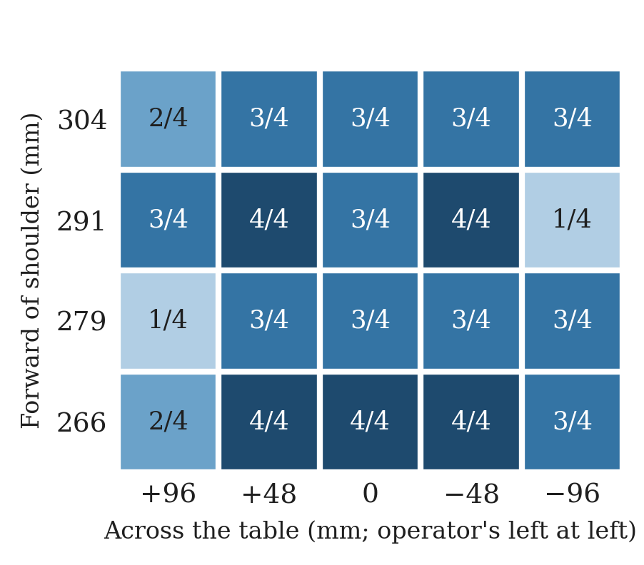
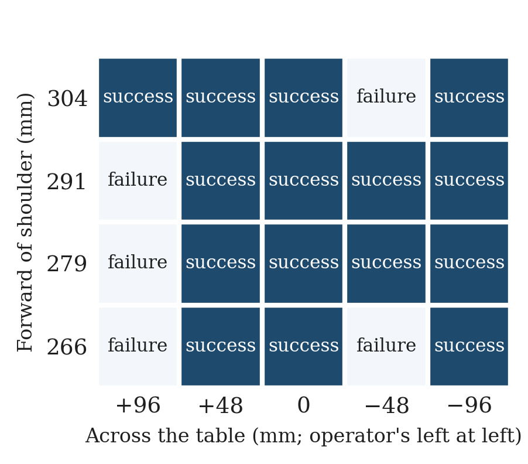
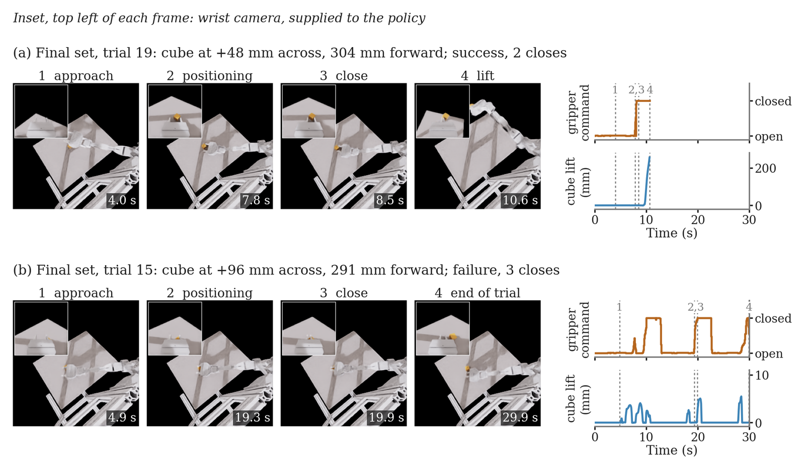

This page contains the images and videos used to support the thesis. All manipulation and policy results shown here were obtained in Isaac Sim. The trained policies were not transferred to the physical arm. All experimental content is derived directly from the recorded data. Trials, outcomes and measured signals are not altered; any re-rendering, synchronisation or playback-rate changes are stated explicitly below.
Contents
- The simulated task
- Teleoperation
- Retargeting
- The policies
- Best-performing policy: Policy D
- Selected trials discussed in the thesis
- How the videos were made
1. The simulated task
A 6-DOF desktop arm with a parallel gripper, simulated in Isaac Sim, must pick up a 30 mm cube from a table. Two cameras record each episode at 256 × 256:
- a head camera placed at the estimated eye position of the completed robot, looking down over the table;
- a wrist camera mounted on the gripper, looking past the jaws.
| Simulated scene | Head camera | Wrist camera |
|---|---|---|
 |
 |
 |
The arm is in a recorded pose from an evaluation trial (policy D, trial 19, 7.8 s, just before its successful close). The camera views are rendered at 1024 × 1024 through the recording cameras, so they match the 256 × 256 frames the policies receive in position and field of view. The scene has no floor or surroundings, so empty space renders black, as in every recorded frame.
2. Teleoperation
The operator stands in front of a stereo pair of webcams. Their right arm is reconstructed in 3D, without markers, and retargeted onto the robot's joints in real time. Closing the hand into a fist closes the gripper and opening it opens the gripper. The command is binary, with a gap between the closing and opening thresholds so that a half-closed hand does not make the gripper chatter.
The demonstration set:
- 55 attempts were made; 50 succeeded (91%) and were saved;
- the saved demonstrations totalled 19.4 minutes, with durations from 10.1 s to 47.5 s and a median of 20.9 s;
- 48 demonstrations (13,343 frames) passed dataset validation and were used for training. One was rejected for a joint-limit violation and one for 0.32 s of dropped frames.
Three demonstrations from the recorded set. Each video shows, at the same moment:
- top left: the operator, filmed by the left camera, with the tracked skeleton;
- top right: the operator's screen, i.e. the Isaac Sim viewport they watched while operating, re-rendered from the recording (see below);
- bottom: the robot's head and wrist cameras, as recorded;
- strip: the time, the measured gripper opening and the cube's height.
Demonstration 47 (10.1 s, cube on the robot's left)
Demonstration 2 (19.7 s, cube on the robot's right)
Demonstration 39 (19.0 s, cube near the centre)
The operator's screen was not recorded during the session. It is re-rendered here from the same viewport camera (the fixed front view the session log shows was in use). Every frame, the arm's joints, the gripper opening and the cube's position are set to the recorded values. The cube's orientation was not recorded, so it is drawn square to the table. The grasp-guide panel the operator also had on screen is not shown.

Operator (top) and robot head camera with wrist inset (bottom) at four moments of demonstration 2.3. Retargeting

Four arm configurations from one recording, chosen by pose (never by error). Each shows the operator with the reconstructed landmarks projected back into the camera image, beside the robot posed by the final joint-centre retargeting of that frame. In all four frames the arm and hand landmarks were freshly reconstructed, not carried over from an earlier frame.
Reconstructed operator angles (blue) against the commanded robot joints (dashed), with the live command filter at its demonstration settings (time constant 0.2 s, 2.5 rad/s). Grey bands mark frames where the whole skeleton was rejected and the previous one reused. The spike at about 4 s in (d) is the command crossing between two elbow configurations that point the forearm the same way; the thesis discusses it.4. The policies
Five ACT policy configurations were trained using the same ACT implementation, random seed (1000), batch size and action-chunk length (24). The number of demonstrations, training duration and camera inputs were varied as shown below. Temporal ensembling was disabled. Each policy was evaluated on 20 trials, one per cube position on a 5 × 4 grid: −96 to +96 mm across, 266 to 304 mm forward of the shoulder. A trial succeeds when the cube is lifted at least 40 mm and held for 0.5 s within 30 s.
| Policy | Demonstrations | Cameras | Training steps | Success |
|---|---|---|---|---|
| A | 11 | head + wrist | 50k | 11/20 |
| B | 24 retained from first 25 recorded | head + wrist | 50k | 13/20 |
| C | 48 | head + wrist | 50k | 16/20 |
| D | 48 | head + wrist | 100k | 19/20 |
| E | 48 | head only | 100k | 15/20 |
The demonstration counts shown in the table refer to the validated training set used for the main evaluation. Across Policies A–D, which use both camera views, 59 of 80 evaluation trials succeeded (74%).
Success at each cube position, seen from above (forward of the shoulder up the page, the operator's left on the left).
| Policies A–D pooled (out of 4) | Policy E (one trial) |
|---|---|
 |
 |
5. Best-performing policy: Policy D
Policy D was the strongest policy in the evaluation. It was trained for 100,000 steps using all 48 validated demonstrations and received both the head- and wrist-camera observations. It succeeded in 19 of 20 evaluation trials (95%).
The video below shows all 20 trials in the order in which they were evaluated. No trial has been removed. Each trial begins with its recorded duration and the automatically determined outcome ("PICK" or "no pick"), and these outcomes agree with the evaluation log.
The single failure occurred with the cube at +96 mm across and 291 mm forward of the shoulder. Policy D issued three gripper-close commands during the trial, but the cube was not lifted successfully. The successful and failed examples discussed in the thesis are shown in more detail in the following section.
6. Selected trials discussed in the thesis
The following trials correspond to examples discussed in the thesis figures. The complete videos are provided here so that the behaviour before and after the selected figure frames can be inspected. In the videos, the episode number is the trial number minus one.
Policy D
Successful trial — trial 19, cube at +48 mm across and 304 mm forward.
Only failed trial — trial 15, cube at +96 mm across and 291 mm forward. Three gripper-close commands were issued, but the cube never rose more than 5.5 mm.

Additional trial referenced in the thesis
Policy E failure — trial 5, cube at +96 mm across and 266 mm forward. Policy E received only the head-camera observation. The gripper was never commanded closed, and the cube was pushed 97 mm.
7. How the videos were made
- Source: policy-evaluation videos are generated directly from the recorded episode files, including the camera frames, joint states, binary gripper command and cube position. The teleoperation videos combine separately recorded operator footage with the corresponding episode data. The "operator's screen" pane is re-rendered in Isaac Sim from the recorded robot joint states and cube position because the live viewport itself was not screen-recorded. The status strip beneath each video shows the measured gripper opening, not the binary command.
- Teleoperation videos: the operator film and the robot recording are lined up by clock time, then corrected by the gripper signal both sides record.
- Frame rates: demonstrations were recorded at 11.4–13.1 frames/s and evaluation trials at 12.1–14.2 frames/s. Single-trial and demonstration videos play at their recorded rate. The all-trials videos play every trial at 12 frames/s, so there a trial can run up to about 15 % slow; the time in the strip is always the recorded time.
- Strip under each video: the time from the start of the episode, the measured gripper opening (bar) and the cube's height above its starting position.
- Images: the 256 × 256 camera images are enlarged ×2 with no smoothing.